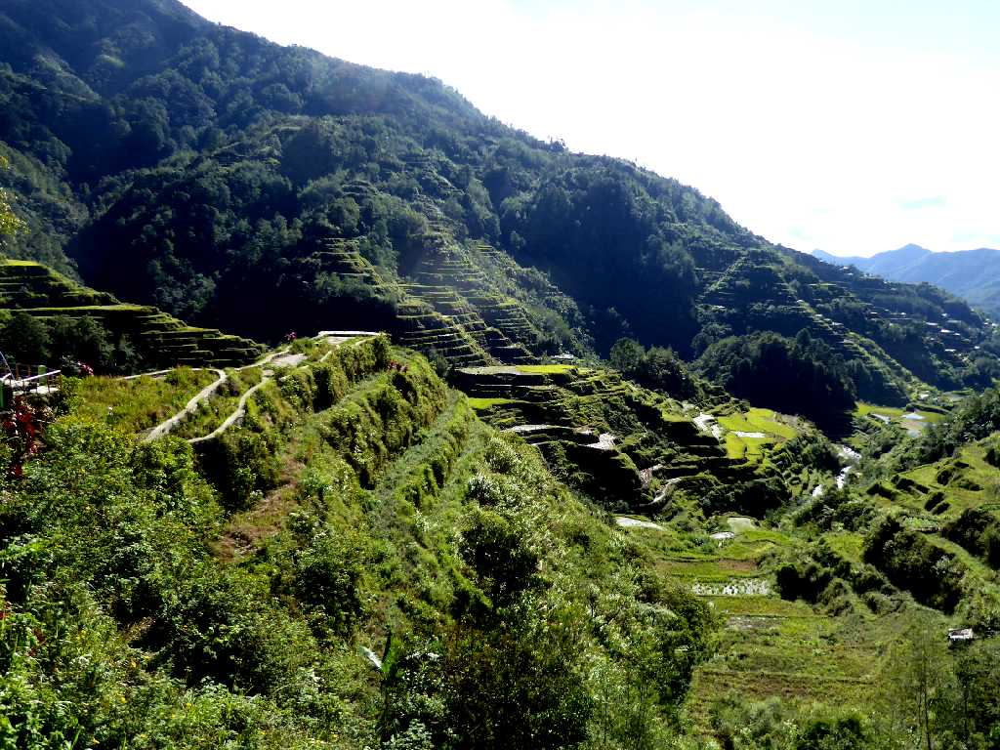
Rice Terraces Banaue Cordilleras
バナウェの棚田群は天国への階段と云われ世界の８番目の不思議と称されるコルディレラ地方の美しい棚田群
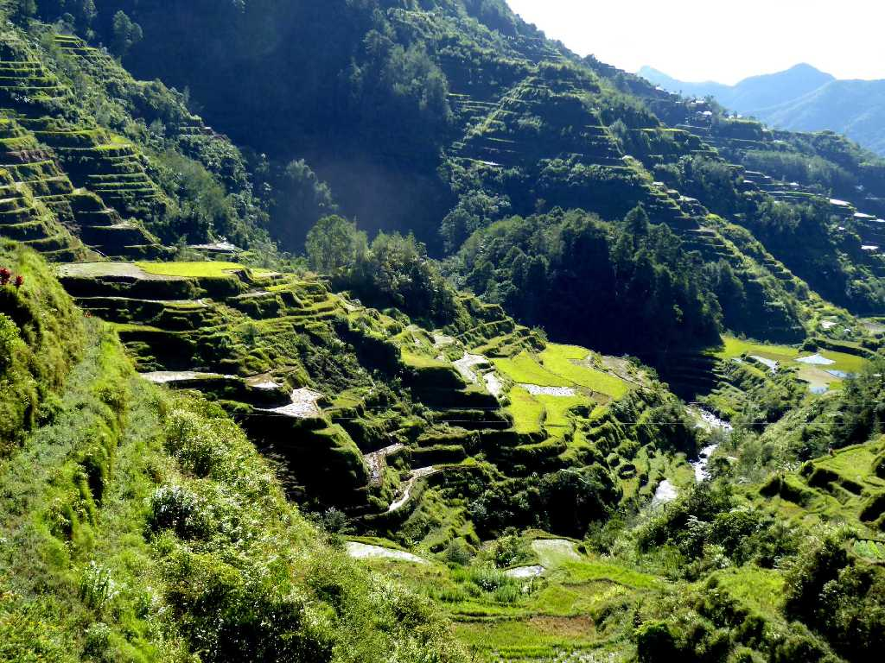
Rice Terraces Banaue
総延長が地球を半周する２万キロにおよぶと云われ２千年にわたり築かれてきた棚田であるがあまりにも広大すぎるため近年耕作放棄が進みはじめ危機遺産になっている
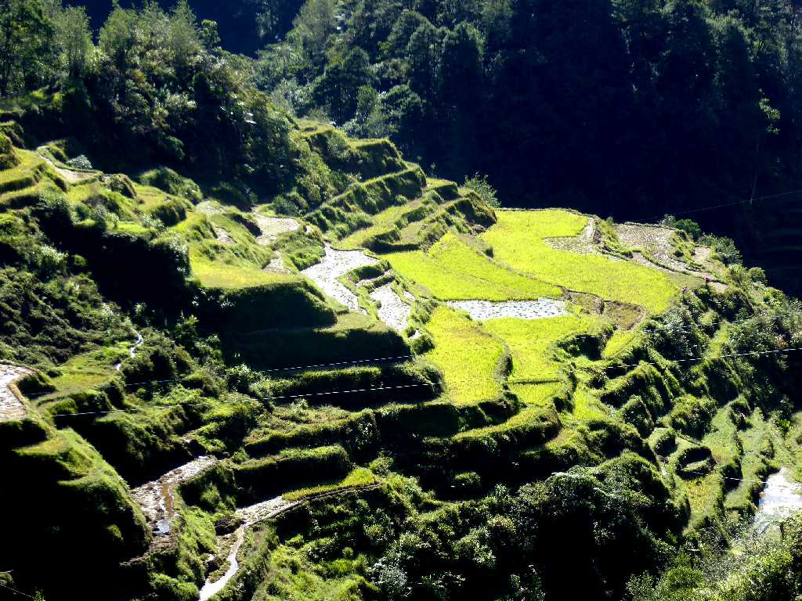
Rice Terraces Banaue
棚田は２毛作や３毛作が行われ時期をずらして田植えや刈り取りが行われているが広大な棚田群の管理が大変で自給の生活食糧を収穫するのみで販売する余裕はない
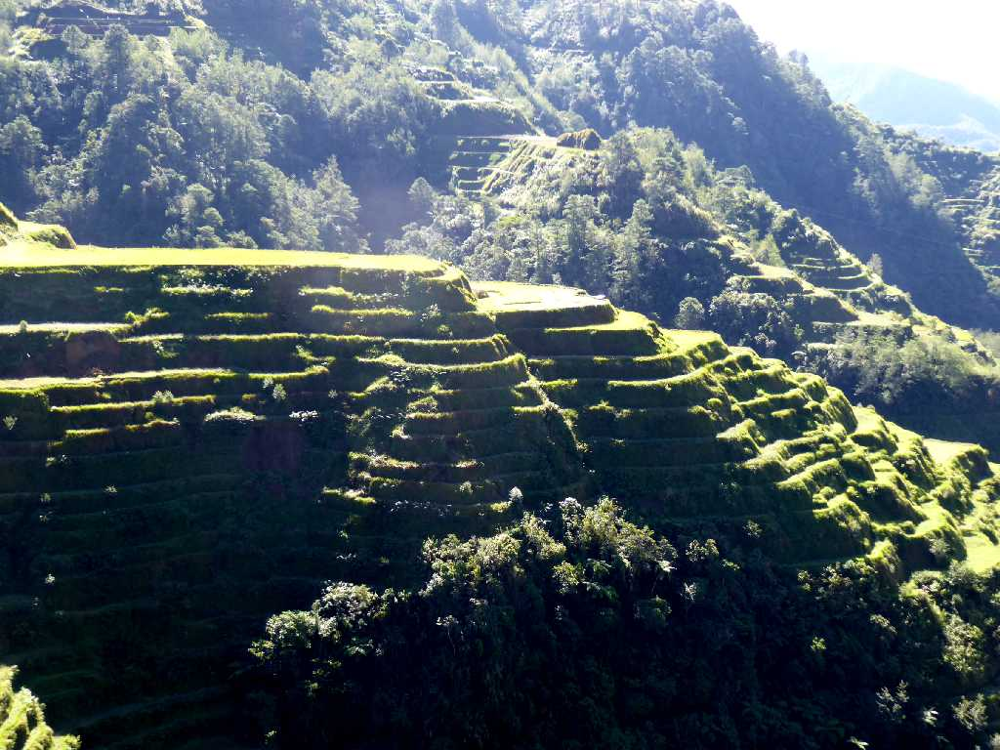
Rice Terraces Banaue
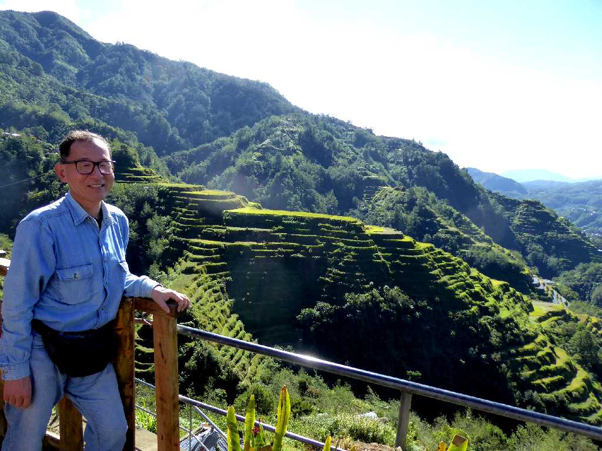
January 24 2019 Rice Terraces Banaue
２０ペソ札の図柄となった食糧庁推薦の美しい景観
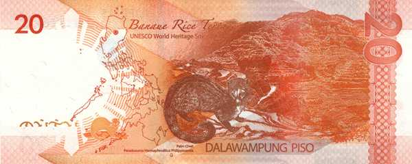
Banknote Rice Terraces Banaue
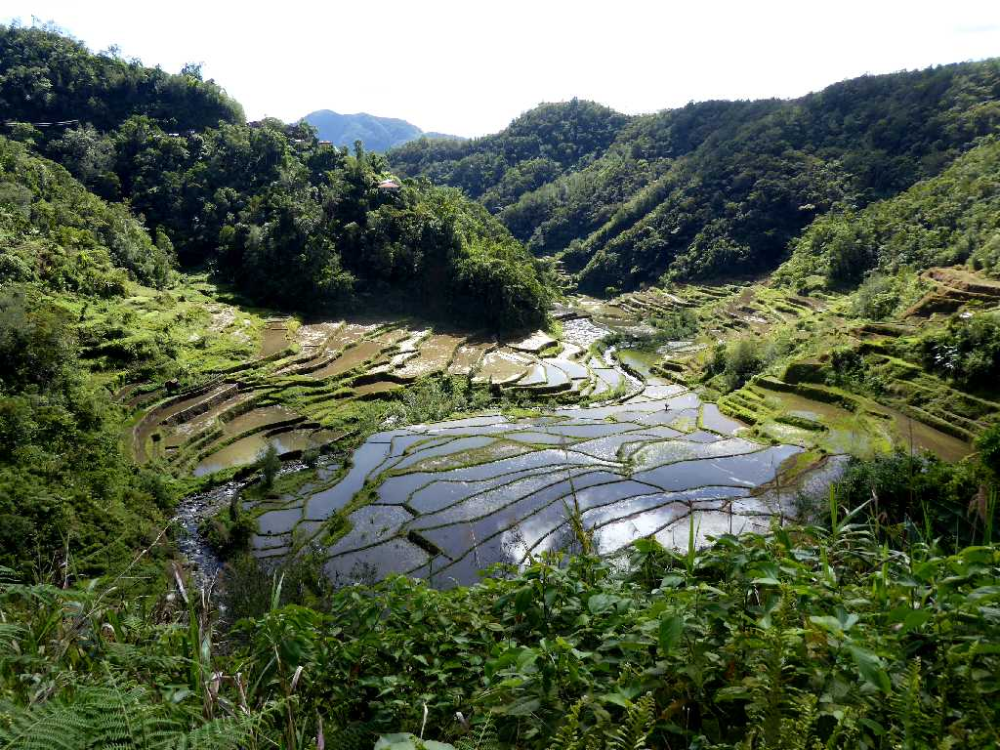
Rice Terraces Banaue
国道沿いには棚田群が並んでいるが大規模な棚田群は国道から山道を数時間歩いて入らないと観ることが出来ない
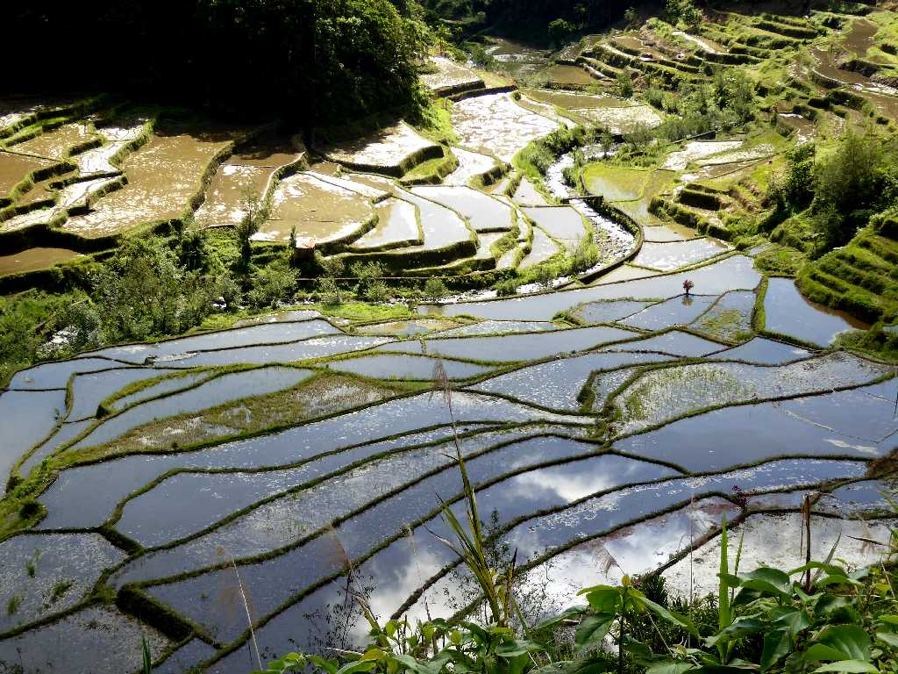
Rice Terraces Banaue
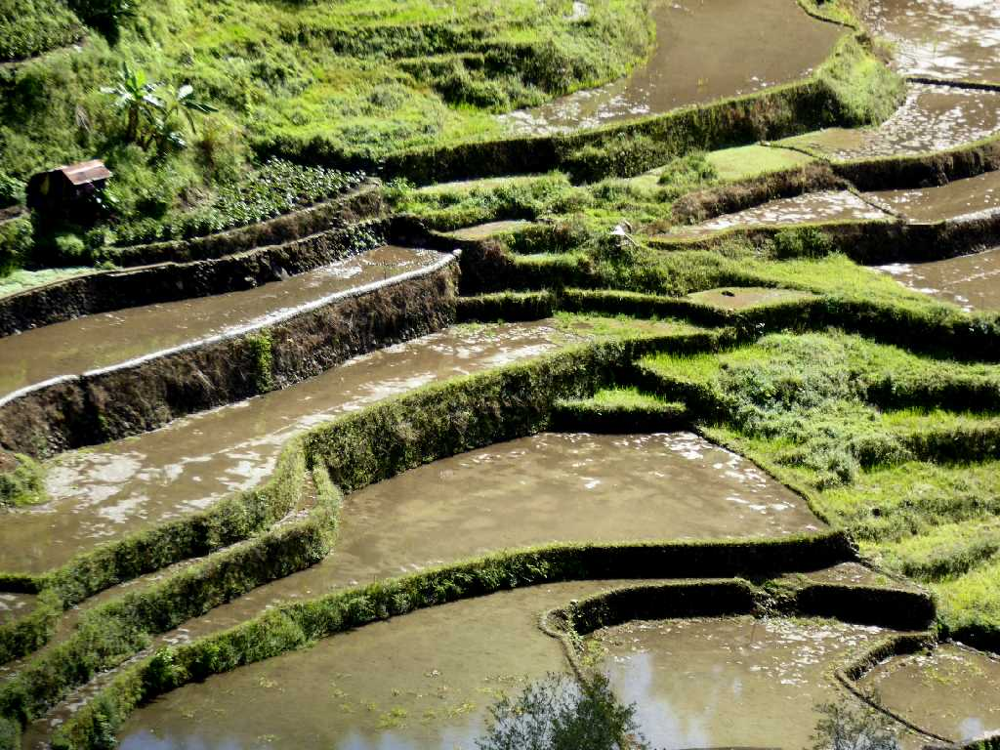
Rice Terraces Banaue
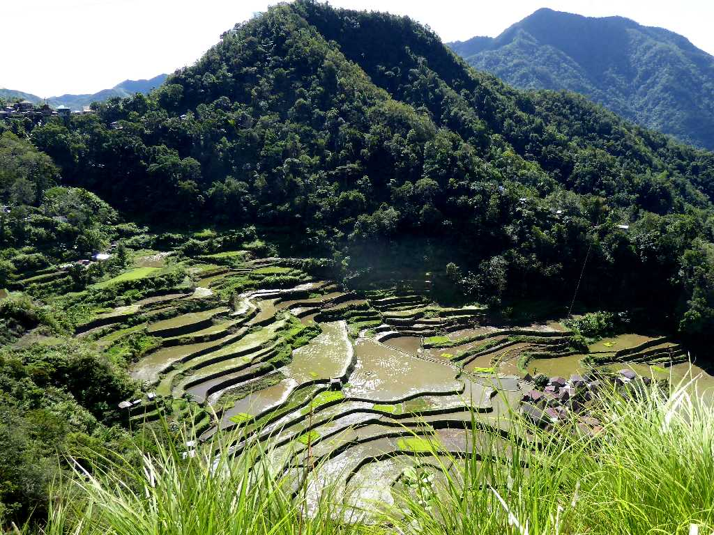
Rice Terraces Bangaan Village Banaue
公開されているバンガアン村の棚田群を散策
Rice Terraces Bangaan Village Banaue
田んぼの中に苗床を作っている
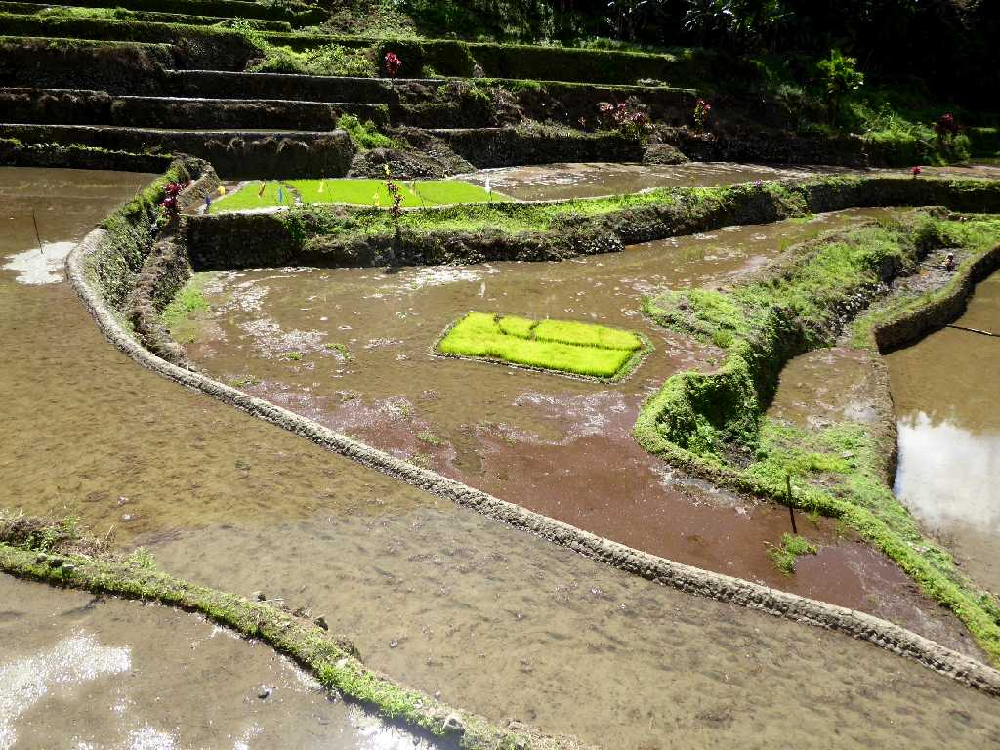
Rice Terraces Bangaan Village Banaue

Bangaan Village Banaue
高床式住居群にはねずみ返しがあり入口に掛けてある木梯子を立て掛けて入室する
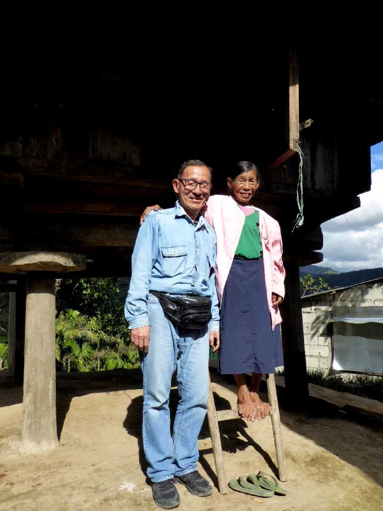
January 24 2019 Tam An Village Banaue
タムアン村の長老とご自宅前で記念撮影

Clouds Rice Terraces Banaue
年間降水量が多いため雲中の棚田群の景観が一般的
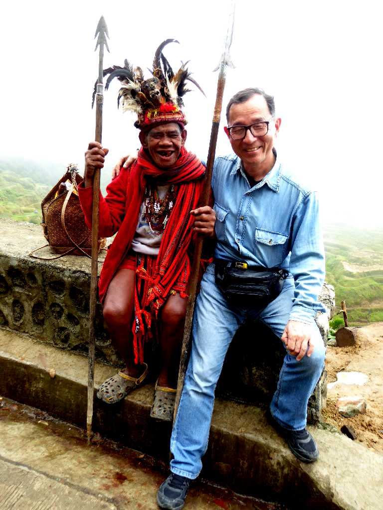
January 25 2019 Rice Terraces Banaue